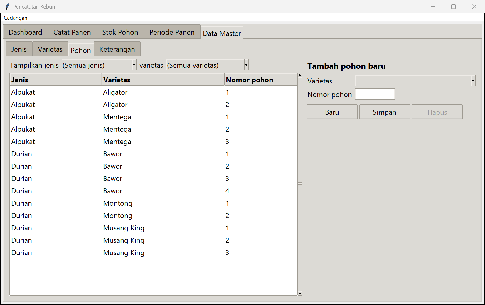
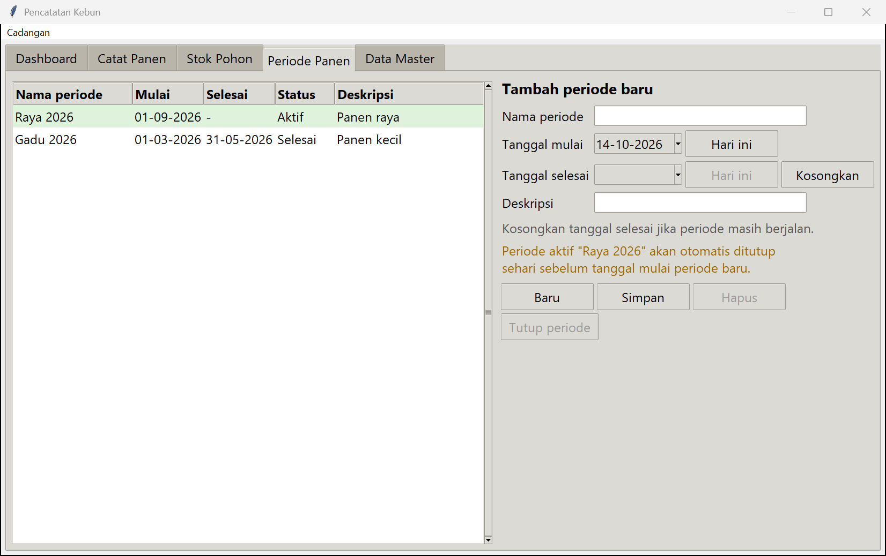
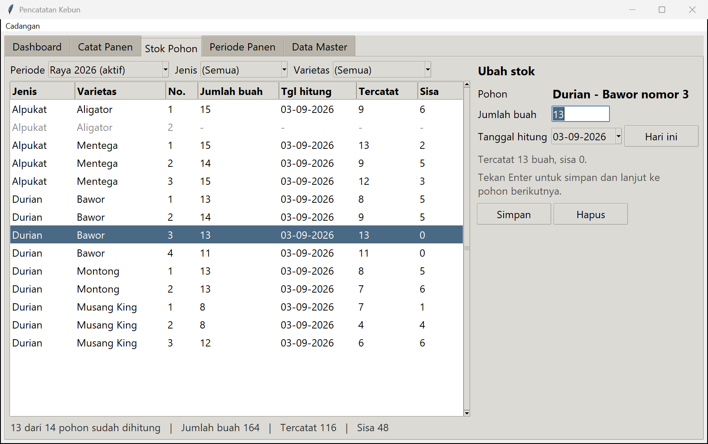
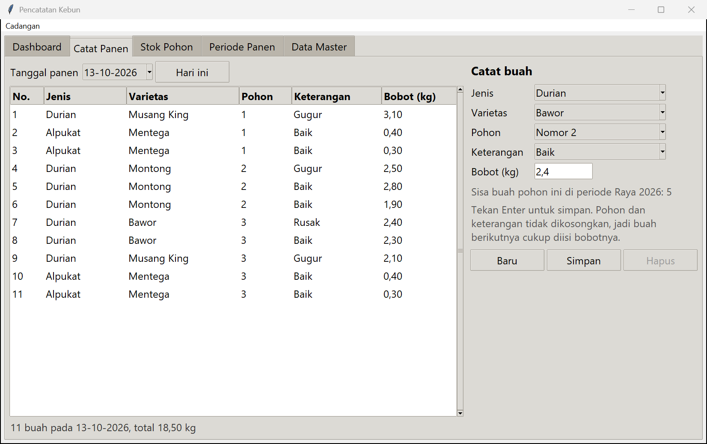
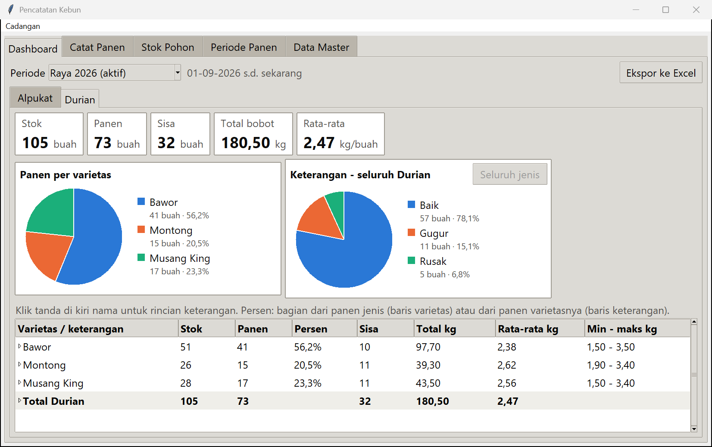

Aplikasi untuk mencatat stok buah dan hasil panen kebun, pengganti catatan Excel.
1. Memasang aplikasi
Jika menerima file zip: klik kanan file zip, pilih Extract All
(Ekstrak Semua), lalu Extract.
Pindahkan folder PencatatanKebun ke tempat tetap, misalnya C:\PencatatanKebun.
Isi folder jangan dipisah-pisah.
Di dalam folder itu, klik kanan PencatatanKebun.exe →
Show more options (Tampilkan opsi lainnya) →
Send to (Kirim ke) → Desktop (create shortcut).
Selanjutnya buka aplikasi dari ikon di Desktop.
Jika muncul tulisan "Windows melindungi PC Anda", klik More info (Info selengkapnya)
lalu Run anyway (Tetap jalankan). Ini hanya muncul pertama kali.
2. Mengenal jendela aplikasi
Di bagian atas ada lima tab. Klik nama tab untuk berpindah halaman.
Tab
Kegunaan
Dashboard
Melihat ringkasan panen: jumlah buah, berat, dan diagram.
Catat Panen
Mencatat buah yang dipanen (paling sering dipakai).
Stok Pohon
Mencatat jumlah buah di setiap pohon pada awal musim.
Periode Panen
Membuka dan menutup musim panen.
Data Master
Daftar jenis tanaman, varietas, pohon, dan keterangan buah.
Cara mengisi yang sama di semua tab
Daftar data ada di kiri, isian ada di kanan.
Untuk menambah data: isi isian di kanan, lalu Simpan (atau tombol
Enter di keyboard). Isian langsung kosong lagi, siap untuk data berikutnya.
Untuk memperbaiki data: klik barisnya di daftar kiri, ubah isian di kanan,
lalu Simpan. Untuk menghapus: klik barisnya, lalu
Hapus. Selesai mengubah dan ingin menambah data baru? Klik
+ Tambah baru (atau tombol Esc) untuk mengosongkan isian.
Tanggal dipilih dari kalender: klik tanda panah kecil di kotak tanggal, lalu klik
tanggalnya. Tombol Hari ini langsung mengisi tanggal hari ini.
Berat ditulis dalam kilogram dengan koma, misalnya 2,4.
Jika ada isian yang salah, muncul pesan yang menjelaskan apa yang perlu diperbaiki.
3. Pertama kali: isi Data Master
Lakukan sekali saja di awal, dan tambahkan lagi jika ada pohon baru. Buka tab
Data Master. Isi berurutan dari tab kecil paling kiri:
Jenis: nama tanaman, misalnya Durian, Alpukat. Ketik nama, tekan
Enter, lalu langsung ketik jenis berikutnya.
Varietas: pilih jenisnya, lalu ketik nama varietas, misalnya Bawor,
Musang King.
Pohon: pilih varietas, lalu isi nomor pohon (1, 2, 3, ...). Nomor boleh sama untuk
varietas berbeda (Bawor nomor 1 dan Montong nomor 1).
Keterangan: keadaan buah saat dipanen, misalnya Baik, Gugur,
Rusak. Keterangan ini dipilih setiap kali mencatat buah.

Data Master → Pohon: pilih varietas, isi nomor pohon, tekan Enter.
4. Membuka periode panen
Periode adalah satu musim panen, misalnya Raya 2026. Buka periode baru setiap awal
musim. Buka tab Periode Panen:
Isi Nama periode, misalnya Raya 2026.
Pilih Tanggal mulai.
Biarkan Tanggal selesai kosong selama musim masih berjalan.
Klik Simpan. Periode tampil dengan status Aktif (berwarna hijau).
Saat periode baru dibuka, periode sebelumnya otomatis ditutup sehari sebelumnya. Untuk menutup
periode secara manual, klik periodenya lalu Tutup periode.

Periode Panen: periode yang masih berjalan berstatus Aktif.
5. Mengisi stok pohon (awal musim)
Stok adalah jumlah buah yang dihitung di setiap pohon. Dari stok ini aplikasi menghitung
sisa buah yang belum dipanen. Buka tab Stok Pohon:
Pastikan Periode di atas sudah benar (biasanya periode aktif).
Klik pohon pertama di daftar.
Ketik Jumlah buah, pilih Tanggal hitung, lalu tekan Enter.
Pilihan otomatis pindah ke pohon berikutnya, jadi cukup ketik angka dan Enter terus.
Pohon yang belum dihitung tampil abu-abu.
Baris merah muda berarti buah yang dipanen sudah lebih banyak dari stoknya;
periksa lagi jumlah stoknya.
Kolom Tercatat = buah yang sudah dicatat panen; Sisa = stok dikurangi
tercatat.

Stok Pohon: klik pohon, ketik jumlah buah, Enter, lanjut ke pohon berikutnya.
6. Mencatat panen (setiap hari panen)
Setiap buah dicatat satu per satu beserta beratnya. Buka tab Catat Panen:
Pilih Tanggal panen di kiri atas (biasanya Hari ini).
Di kanan, pilih Jenis, Varietas, dan Pohon.
Pilih Keterangan (misalnya Baik, Gugur, Rusak).
Ketik Bobot (kg), misalnya 2,4, lalu tekan Enter.
Untuk buah berikutnya dari pohon yang sama, cukup ketik bobot dan Enter lagi.
Pohon dan keterangan tidak berubah. Ganti pohon atau keterangan hanya jika perlu.
Daftar di kiri menampilkan semua buah pada tanggal itu, dan di bawahnya jumlah buah serta
total beratnya. Di bawah isian tampil sisa buah pohon yang dipilih.
Jika muncul pesan "Periksa sisa buah", artinya sisa buah pohon itu sudah habis, pohon
belum diisi stoknya, atau tanggalnya di luar periode panen. Periksa lagi pilihan pohon dan
tanggal. Jika memang benar, klik Yes (Ya) untuk tetap menyimpan.

Catat Panen: pilih pohon dan keterangan, ketik bobot, Enter.
7. Melihat hasil dan membuat laporan Excel
Buka tab Dashboard. Pilih Periode di atas. Setiap jenis tanaman
punya tab sendiri (misalnya Durian, Alpukat), berisi:
Kotak angka: Stok, Panen, Sisa, Total bobot, dan
Rata-rata berat per buah.
Diagram panen per varietas dan per keterangan.
Tabel per varietas. Klik tanda kecil di kiri nama varietas untuk melihat rincian per
keterangan. Klik satu varietas untuk melihat diagram keterangannya saja.

Dashboard: ringkasan panen satu periode untuk setiap jenis tanaman.
Laporan Excel
Di Dashboard, pilih periodenya, lalu klik Ekspor ke Excel.
Pilih tempat menyimpan (bawaannya folder Dokumen), lalu klik Save (Simpan).
Pilih Yes (Ya) untuk langsung membuka filenya.
File Excel berisi ringkasan, satu lembar per jenis (seperti catatan Excel lama: satu baris
per pohon, satu kolom per tanggal panen), dan daftar setiap buah dengan beratnya.
8. Menyimpan cadangan (penting)
Semua catatan tersimpan di komputer ini. Jika komputer rusak atau hilang, catatan ikut hilang.
Simpan cadangan ke flashdisk secara rutin, misalnya setiap minggu selama musim panen.
Menu Cadangan ada di baris paling atas jendela, di bawah judul.
Menyimpan cadangan
Colokkan flashdisk.
Klik Cadangan → Simpan cadangan...
Pilih flashdisk sebagai tempat menyimpan, lalu klik Save (Simpan). Nama file
otomatis berisi tanggal hari ini, misalnya Cadangan Kebun 14-10-2026.db.
Selain itu, aplikasi juga otomatis menyimpan cadangan di komputer setiap kali ditutup
(10 cadangan terakhir). Cadangan otomatis ini tidak menolong jika komputernya yang rusak,
jadi tetap simpan ke flashdisk.
Mengembalikan data dari cadangan
Klik Cadangan → Pulihkan dari cadangan...
Pilih file cadangan, lalu jawab Yes (Ya).
Semua data sekarang diganti dengan isi cadangan. Data sebelumnya disimpan dulu secara
otomatis, jadi jika salah pilih file masih bisa dikembalikan.
9. Akhir tahun: arsipkan data panen
Jika ingin memulai dari catatan kosong (misalnya setiap awal tahun), klik
Cadangan → Arsipkan dan kosongkan data panen...
Semua data disimpan ke file arsip, lalu periode, stok, dan catatan buah dihapus dari
aplikasi. Data Master (jenis, varietas, pohon, keterangan) tetap ada.
Ini tidak wajib; aplikasi tetap lancar walau berisi catatan bertahun-tahun. Untuk melihat
data lama lagi, pakai Pulihkan dari cadangan dengan file arsip tersebut.
10. Jika ada masalah
Muncul pesan kesalahan: baca pesannya; biasanya menjelaskan isian mana yang salah.
Aplikasi tidak mau terbuka atau muncul kesalahan tak terduga: hubungi pembuat
aplikasi dan kirimkan file kebun.log. Cara menemukannya: tekan tombol
Windows + R, ketik %APPDATA%\PencatatanKebun, tekan Enter.
Salah memasukkan data: klik barisnya di daftar, perbaiki, lalu
Simpan. Atau klik Hapus.
Memasang versi baru: ganti folder PencatatanKebun dengan yang baru. Catatan tidak
hilang, karena tersimpan terpisah dari folder aplikasi.